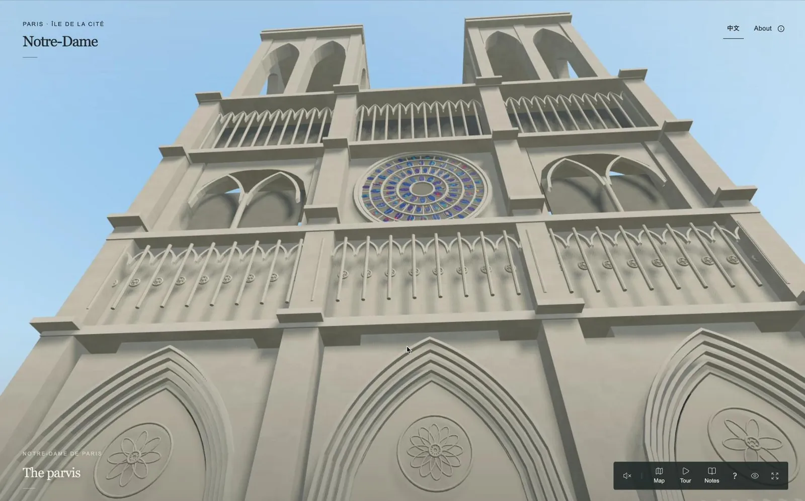

PROJECT NOTES / 2026.09
Notre-Dame: A Quiet Passage
A quiet first-person walk through Notre-Dame, from the parvis into stained-glass light

The walk begins on the parvis, looking up at the west front of Notre-Dame. Head toward the portals and the great door opens slowly. As you cross the threshold, the light and the sound change, and the nave opens into columns, carved stone and colored light falling through the stained glass.
It is made for slow looking, on a desktop or on a phone. On touch screens, one thumb moves you with a small stick while the other looks around. A map, automatic stairs, a guided tour and notes in Chinese and English are there when you want them, and stay out of the way when you don't.
The restored cathedral guides the architecture, but this is an artistic study, not a digital twin. The building lives in an editable Blender master and reaches the browser as compressed pieces. The sources are labeled honestly: the two sculptures inside come from The Met's open-access Pieta with Donors, not from Notre-Dame, and the portals, choir motifs and transept glass are my own interpretations.